Detecção automática de Bolhas de Plasma Equatoriais em imagens all-sky com Machine Learning
Controle de qualidade do céu em cascata + pré-processamento guiado pela física (δI/I) + 2DPCA + classificador linear com atribuição exata por pixel
Universidade Federal da Paraíba (UFPB) · Universidade Federal de Campina Grande (UFCG)
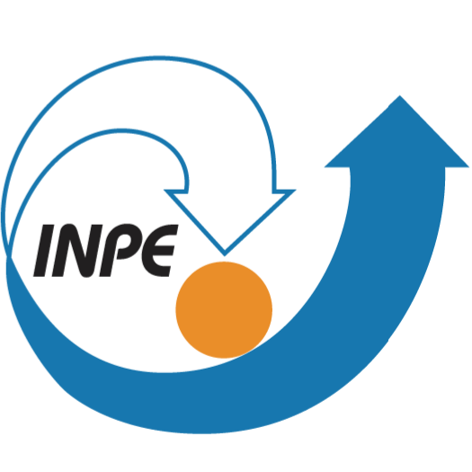
O que são Bolhas de Plasma Equatoriais?
- Após o pôr do sol, a camada F inferior recombina mais rápido que a superior → forte gradiente vertical de densidade.
- A instabilidade Rayleigh–Taylor faz plasma rarefeito "subir" através do plasma denso, como um fluido leve sob um pesado.
- Surgem depleções alongadas ao longo das linhas de campo, que derivam para leste durante a noite.
- Causam cintilação em sinais de GNSS e comunicação via satélite.
Como enxergamos?
Imageadores all-sky da rede EMBRACE/INPE registram o airglow OI 630,0 nm (~250 km). As bolhas aparecem como faixas escuras no céu.
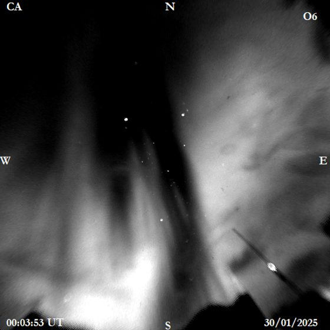
Cariri (CA) · OI 630 nm · 30/01/2025 · 28 quadros (cor falsa)
O gargalo da identificação manual
👁️ Inspeção visual
Por décadas, especialistas analisam quadro a quadro milhares de imagens por noite, em várias estações.
☁️ Ruído ambiental e fatores de confusão
Nuvens, poluição luminosa urbana, gradientes radiais de iluminação e variações naturais do airglow confundem depleções tênues.
🧠 Por que não uma rede profunda "crua"?
Com poucas noites rotuladas, modelos pesados memorizam a condição de brilho da noite em vez da física da bolha.
Pergunta central:
É possível detectar a morfologia física de uma bolha avaliando o modelo
em noites inéditas?
Pipeline em cascata guiado pela física
🔬 Preservação das depleções (δI/I com sinal)
A bolha é uma redução de brilho. Removemos estrelas (abertura morfológica), estimamos o fundo só dentro do domo e calculamos δI/I = I/fundo − 1 (sem corte em zero, preservando valores negativos) + normalização z-score.
🧭 Decomposição 2DPCA + Modelo Linear
O 2DPCA extrai modos espaciais diretamente da matriz 2D (64×64). Uma Regressão Logística balanceada (com hiperparâmetros k e C escolhidos via leave-one-night-out aninhado) garante determinismo e transparência.
Extração de características via 2DPCA: onde o modelo enxerga a anomalia
Os primeiros componentes do 2DPCA capturam a estrutura suave do céu; o resíduo de reconstrução (|entrada − reconstrução|) destaca exatamente as faixas de depleção.
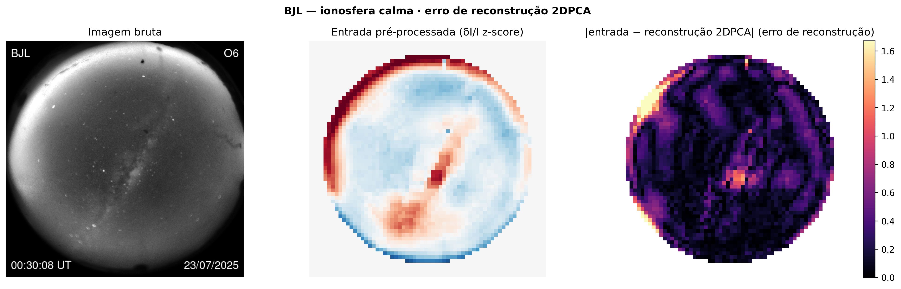
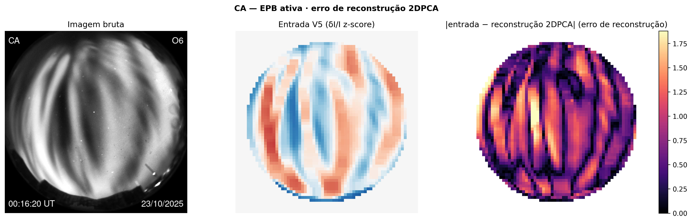
Desempenho em Leave-One-Night-Out (limiar operacional = 0,80)
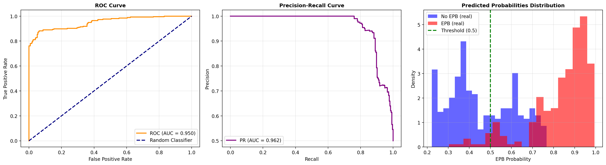
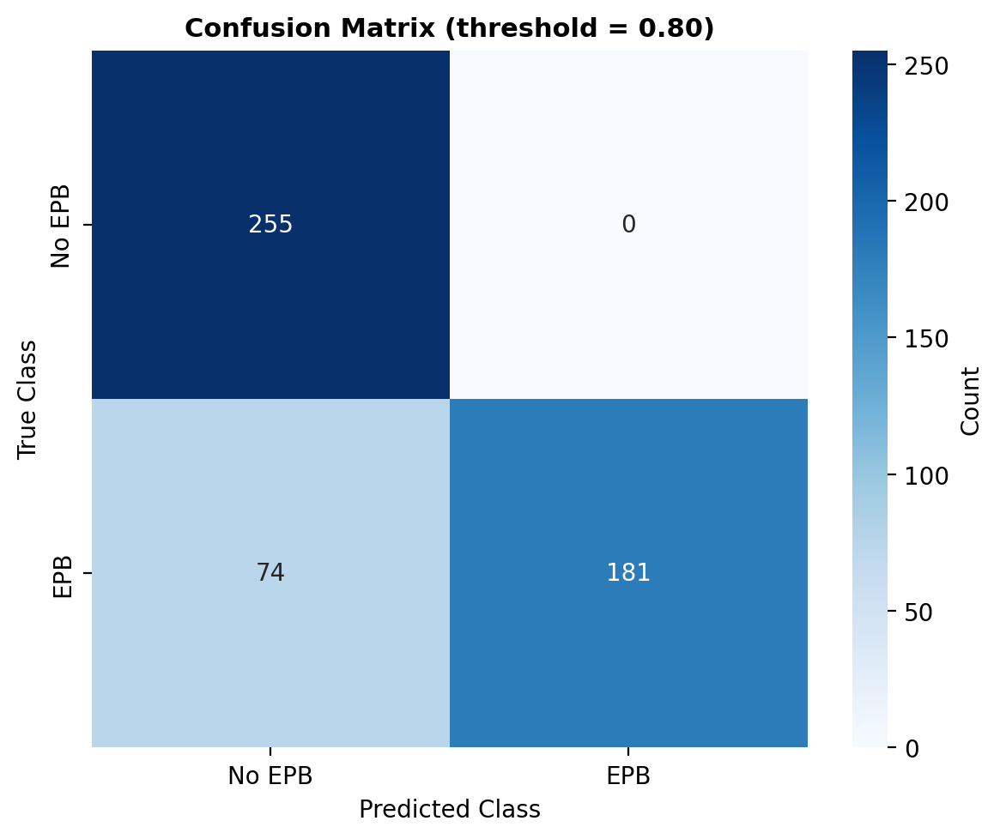
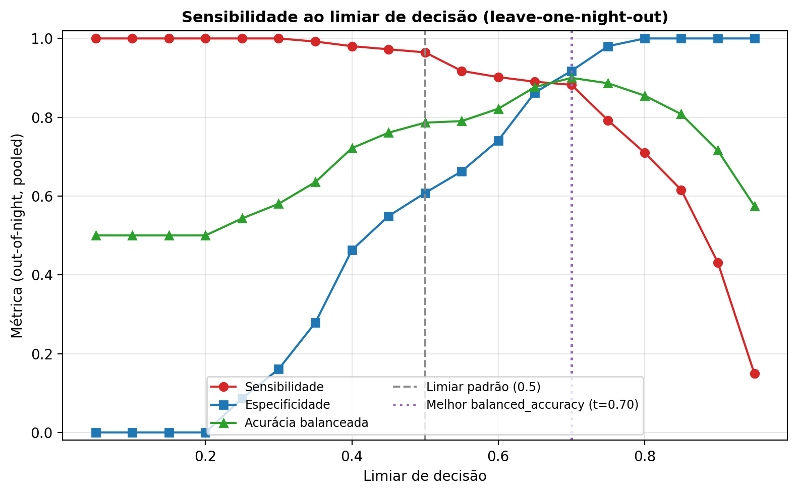
🎯 Por que calibrar o limiar em 0,80?
Como a avaliação é feita em noites inéditas (nenhuma imagem da noite de teste participa do treino), probabilidades brutas sofrem deslocamento pelo brilho noturno.
Em t = 0,80, os falsos positivos caem para apenas 28 em 255 quadros (especificidade 89,0%), alcançando acurácia balanceada de 77,3% e F1 de 0,742.
| Configuração avaliada | Bal. Acc | Especif. | AUC |
|---|---|---|---|
| Contraste com sinal δI/I (sem clip) | 68,4% | 39,6% | 0,906 |
| ★ + Remoção de estrelas + fundo no domo | 78,6% | 60,8% | 0,950 |
| + Achatamento radial (= config atual do V5) | 51,2% | 8,2% | 0,791 |
| Processamento em 512 px (downsample no fim) | 46,1% | 0,0% | 0,716 |
Ablação no limiar padrão (t = 0,5). A config atual do V5 mantém o achatamento radial; seu desempenho forte (especif. 89,0%) vem da calibração do limiar em 0,80. A ablação sugere que desligar o radial já elevaria a AUC para 0,950 — a confirmar com mais noites.
⚠️ Achado central: fator de confusão de brilho
Um baseline trivial usando apenas 5 estatísticas globais de brilho da imagem bruta (média, desvio e percentis — sem nenhuma estrutura espacial) atinge em leave-one-night-out:
Diagnóstico honesto: nas 7 noites disponíveis, a classe é fortemente previsível pela condição global de brilho da noite. O pipeline espacial ainda precisa de mais noites para demonstrar ganho líquido acima do brilho global.
O modelo olha para a física? Atribuição linear exata
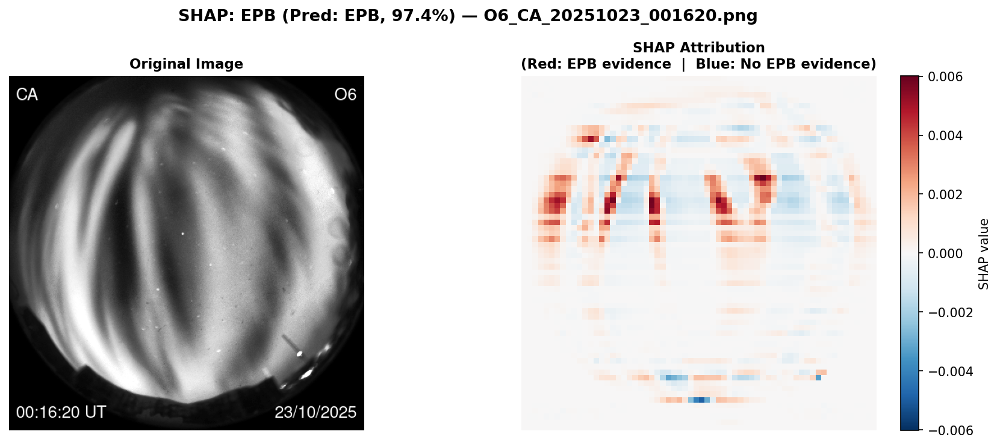
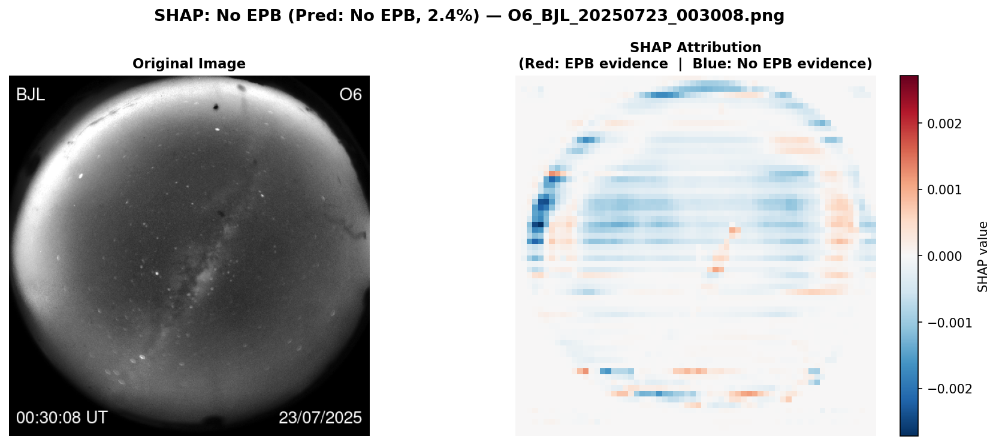
🎯 Atribuição por pixel 100% exata
Como o classificador é linear (2DPCA + StandardScaler + Regressão Logística), a contribuição de cada pixel soma exatamente à diferença de logit (SHAP linear interventional):
🧭 Orientação magnética por estação
Inclinação das faixas medida via tensor de estrutura (tolerância ±25°):
Ambas consistentes com o meridiano magnético (quase vertical) → orientação descartada como confundidor (BJL não possui quadros de EPB).
Cautela obrigatória: dado o fator de confusão de brilho, mapas de atribuição visualmente plausíveis não provam sozinhos que a decisão usa apenas a morfologia da bolha em vez do brilho correlacionado à noite.
Uma noite inteira, quadro a quadro (3 vereditos)
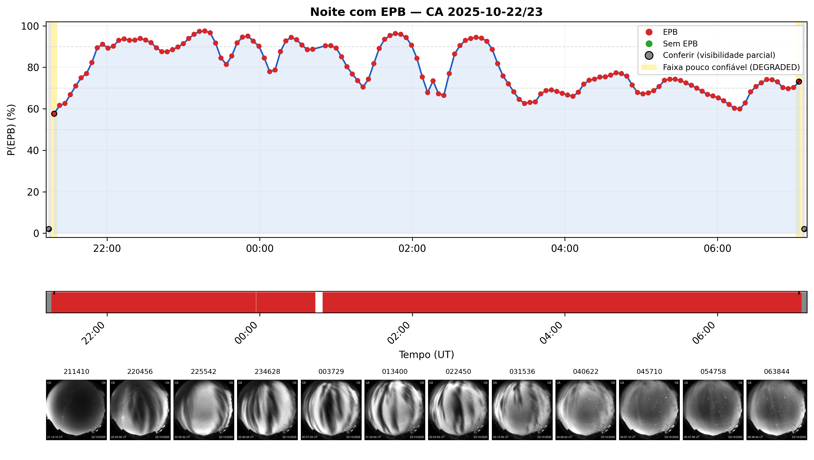
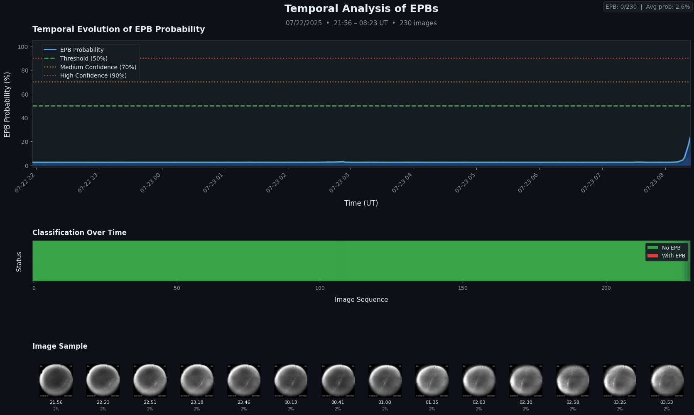
| Sequência noturna | Quadros | % Indet. (QC) | % EPB (Estágio 2) | % EPB (Céu limpo) |
|---|---|---|---|---|
| CA 22–23/10/2025 (EPB ativa) | 140 | 1,4% | 92,9% | 91,4% |
| CA 24–25/06/2026 (Nublada) | 62 | 54,8% | 64,5% | 11,3% (29,0% total) |
| BJL 22–23/07/2025 (Calma) | 230 | 3,5% | 94,3% | 88,3% (falso positivo*) |
*Avaliado no corte padrão; reflete que sem BJL no treino só resta 1 noite calma de céu limpo (de outra estação e outra época: CA, outono).
🔍 Relatório (In-Sample) vs. Teste Cego (Out-of-Night)
As duas primeiras abas demonstram o formato operacional do relatório em 3 vias (EPB, Sem EPB, Indeterminado + alerta conferir) com o modelo final ajustado sobre o conjunto completo.
Já no teste cego out-of-night (tabela ao lado), quando retiramos a noite calma de BJL do treino, o modelo aprende calma apenas a partir de CA (outra estação, outra época do ano) e dispara falso positivo em BJL — provando visualmente por que precisamos de mais noites calmas em diferentes sítios e épocas do ano.
E quando o céu está nublado? Decisão em 3 vias
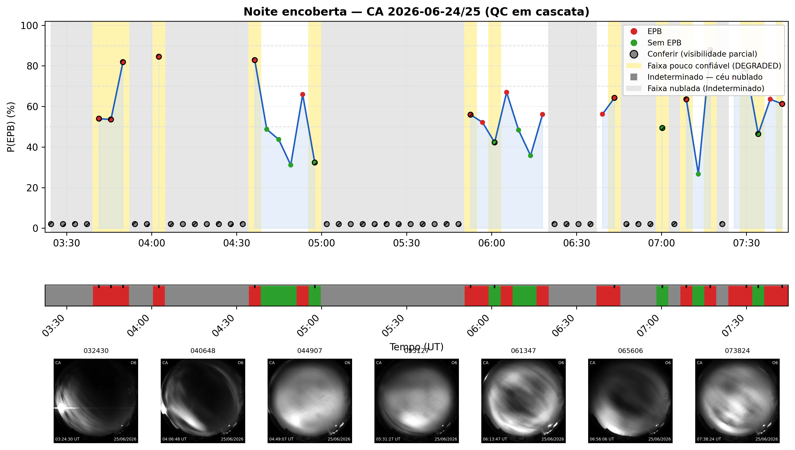
☁️ Porteiro físico: CLEAR · DEGRADED · CLOUDY
Sob nuvens densas ninguém enxerga a ionosfera: o Estágio 1 emite o veredito Indeterminado (recall de nuvem 54,8%, precisão 64,2%). Na noite nublada, a cascata reduz alarmes de EPB de 64,5% para 29,0% (apenas 11,3% em céu limpo confiável).
Custo honesto do QC atual: os limiares (contagem de estrelas e brilho médio) foram ajustados na única noite nublada rotulada (CA 24/06/2026). Em outras noites, o filtro acabou bloqueando quadros legítimos de EPB: 19,0% em CA 27/10/2025 (8/42) e 12,8% em CA 18/12/2025 (11/86). Precisa ser revalidado com nuvens de outras noites.
Amostra efetiva: 572 quadros, mas apenas 7 noites
| Noite (Estação/Data) | Classe | Quadros | Sazonalidade | Observação |
|---|---|---|---|---|
| CA 2025-10-22 | EPB | 85 | Primavera | Temporada de EPB |
| CA 2025-10-27 | EPB | 42 | Primavera | 19,0% bloqueado pelo QC |
| CA 2025-12-18 | EPB | 86 | Verão | 12,8% bloqueado pelo QC |
| CP 2024-02-09 | EPB | 42 | Verão | Única noite de CP (só EPB) |
| BJL 2025-07-22 | Sem EPB | 220 | Inverno | Única noite de BJL (só calma) |
| CA 2025-04-07 | Sem EPB | 35 | Outono | Transição · céu limpo |
| CA 2026-06-24 | Nublada | 62 | Inverno | Usada só no Estágio 1 (QC) |
Por que isso limita o modelo? Na prática há apenas 2 noites calmas de céu limpo. Além disso, a sazonalidade acompanha a classe (EPB = out–fev; Sem EPB = abr–jul): o modelo pode aprender "condições de verão" em vez de bolhas.
🎯 Meta: 20 a 40 noites (quebrando confundidores)
Com 7 noites, 1 noite errada altera a acurácia em 15 a 30 pontos. Estimamos um mínimo de ~20 noites (10/classe) e ideal de 30 a 40 noites (15–20/classe), priorizando 4 perfis:
As mais valiosas (hoje = 0): as duas classes ocorrem com a mesma atmosfera de fundo, mesma época e mesmo sensor — impossível acertar só "reconhecendo a noite".
Desacoplam época do ano e densidade sazonal de fundo, testando exatamente onde o modelo mais erra hoje.
Hoje todas as EPBs estão em verão/primavera. Amostras fora de época quebram a correlação espúria com a emissão sazonal da ionosfera.
Hoje CP só tem EPB e BJL só tem noite calma; adicionar 1–2 noites da classe faltante em cada sítio (desacopla iluminação urbana local e resposta óptica de cada observatório).
Onde estamos — síntese honesta
✔ Contribuições metodológicas e diagnósticas
Preserva as depleções negativas sem clipping (elevando a AUC para 0,950 na ablação) e projeta a decisão linear exatamente nos pixels.
Elimina o vazamento entre quadros da mesma noite. No limiar operacional (0,80), atinge 77,3% de acurácia balanceada e 89,0% de especificidade.
Descartamos a orientação magnética entre estações (CA/CP) e expusemos o confundidor de brilho/noite que avaliações por quadro mascaravam.
⚠ Limitações declaradas do estado atual
Sob avaliação por noite, 5 estatísticas globais de brilho atingem 95,9% — o modelo espacial ainda precisa provar valor acima do brilho global em amostra maior.
Rótulo binário por noite inteira, sem conjunto de teste final travado independente e com necessidade de parâmetros de fallback em divisões extremas.
O QC foi ajustado em 1 noite nublada (descartando 13–19% de quadros em 2 noites de EPB), e o achatamento radial atual prejudica a especificidade.
Roteiro para superar as limitações atuais
Referências selecionadas
- Githio, L. et al. (2024). A machine learning approach for estimating the drift velocities of EPBs based on All-Sky Imager and GNSS observations. Advances in Space Research.
- Okoh, D. et al. (2025). A bootstrapping CNN technique for optimizing automated detection of EPBs by optical all-sky imagers. Earth and Space Science.
- Zhong, J. et al. (2025). Automatic detection and feature extraction of EPBs from all-sky airglow image based on machine learning. Space Weather.
- Zhong, J. et al. (2025). Statistical analysis of ML-derived EPB characteristics from airglow observations in Southern China during a solar cycle. Space Weather.
- Yacoub, M. et al. (2025). Automatic detection of EPBs in airglow images using 2DPCA and explainable AI. Mach. Learn. Knowl. Extr.
- Siddiqui, A. (2025). Enhanced identification of EPBs in airglow imagery via 2DPCA and interpretable AI. Int. J. Adv. Artif. Intell. Res.
- Thanakulketsarat, T. et al. (2023). Classification of EPBs using CNN and SVM techniques. Earth, Planets and Space.
- Srisamoodkham, W. et al. (2022). Detecting EPBs on all-sky imager images using CNN. Lecture Notes in Networks and Systems.
- Sedlak, R. et al. (2023). Analysis of 2D airglow imager data with respect to dynamics using machine learning. Atmos. Meas. Tech.
- Liu, P. et al. (2022). Statistical analysis of MSTIDs over Japan based on deep learning instance segmentation. Space Weather.
Dados observacionais: Programa EMBRACE / INPE · Apoio institucional: UFPB, UFCG, CAPES e CNPq.
Perguntas?
Alberto I. C. Vieira · Cosme A. O. B. Figueiredo